Buttons
A button gives the user a way to trigger an immediate action. Some buttons are specialized for particular tasks, such as navigation, repeated actions, or presenting menus.
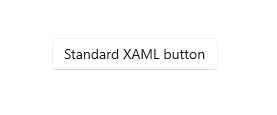
The Extensible Application Markup Language (XAML) framework provides a standard button control as well as several specialized button controls.
| Control | Description |
|---|---|
| Button | A button that initiates an immediate action. Can be used with a Click event or Command binding. |
| RepeatButton | A button that raises a Click event continuously while pressed. |
| HyperlinkButton | A button that's styled like a hyperlink and used for navigation. For more info about hyperlinks, see Hyperlinks. |
| DropDownButton | A button with a chevron to open an attached flyout. |
| SplitButton | A button with two sides. One side initiates an action, and the other side opens a menu. |
| ToggleSplitButton | A toggle button with two sides. One side toggles on/off, and the other side opens a menu. |
| ToggleButton | A button that can be on or off. |
Is this the right control?
Use a Button control to let the user initiate an immediate action, such as submitting a form.
Don't use a Button control when the action is to navigate to another page; instead, use a HyperlinkButton control. For more info about hyperlinks, see Hyperlinks.
Important
For wizard navigation, use buttons labeled Back and Next. For other types of backwards navigation or navigation to an upper level, use a back button.
Use a RepeatButton control when the user might want to trigger an action repeatedly. For example, use a RepeatButton control to increment or decrement a value in a counter.
Use a DropDownButton control when the button has a flyout that contains more options. The default chevron provides a visual indication that the button includes a flyout.
Use a SplitButton control when you want the user to be able to initiate an immediate action or choose from additional options independently.
Use a ToggleButton control when you want the user to be able to immediately switch between two mutually exclusive states, and a button is the best fit for your UI needs. Unless your UI benefits from a button, it might be a better choice to use an AppBarToggleButton, CheckBox, RadioButton, or ToggleSwitch.
Recommendations
Make sure the purpose and state of a button are clear to the user.
When there are multiple buttons for the same decision (such as in a confirmation dialog), present the commit buttons in this order, where [Do it] and [Don't do it] are specific responses to the main instruction:
- OK/[Do it]/Yes
- [Don't do it]/No
- Cancel
- OK/[Do it]/Yes
Expose only one or two buttons to the user at a time, for example, Accept and Cancel. If you need to expose more actions to the user, consider using checkboxes or radio buttons from which the user can select actions, with a single command button to trigger those actions.
For an action that needs to be available across multiple pages within your app, instead of duplicating a button on multiple pages, consider using a bottom app bar.
Button text
A button's content is usually text. When you design that text, use the following recommendations:
Use a concise, specific, self-explanatory text that clearly describes the action that the button performs. Usually button text is a single word that is a verb.
Use the default font, unless your brand guidelines tell you to use something different.
For shorter text, avoid narrow command buttons by using a minimum button width of 120px.
For longer text, avoid wide command buttons by limiting text to a maximum length of 26 characters.
If the button's text content is dynamic (that is, it is localized), consider how the button will be resized and what will happen to controls around it.
| Need to fix: Buttons with overflowing text. |
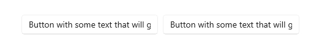 |
| Option 1: Increase button width, stack buttons, and wrap if text length is greater than 26 characters. |
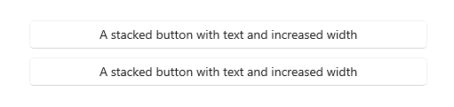 |
| Option 2: Increase button height, and wrap text. |
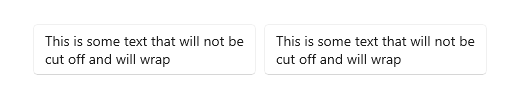 |
Recommended single-button layout
If your layout requires only one button, it should be either left- or right-aligned based on its container context.
Dialogs with only one button should right-align the button. If your dialog contains only one button, ensure that the button performs the safe, nondestructive action. If you use ContentDialog and specify a single button, it will be automatically right-aligned.
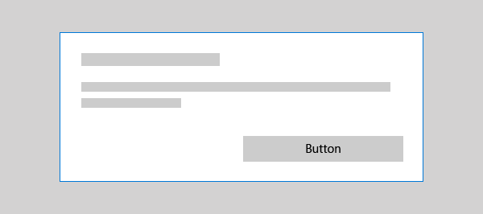
If your button appears within a container UI (for example, within a toast notification, a flyout, or a list view item), you should right-align the button within the container.
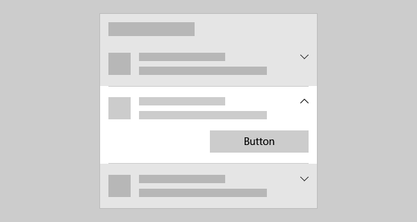
In pages that contain a single button (for example, an Apply button at the bottom of a settings page), you should left-align the button. This ensures that the button aligns with the rest of the page content.
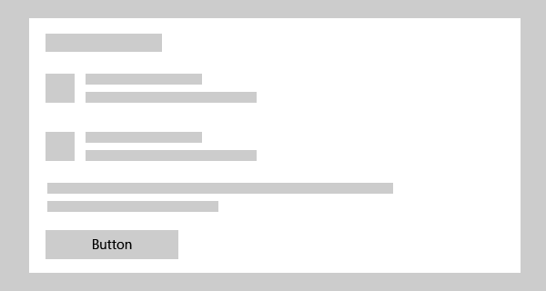
Back buttons
The back button is a system-provided UI element that enables backward navigation through either the back stack or navigation history of the user. You don't have to create your own back button, but you might have to do some work to enable a good backwards navigation experience. For more info, see Navigation history and backwards navigation for Windows apps.
Examples
This example uses three buttons, Save, Don't Save, and Cancel, in a dialog that asks users if they want to save their work.

Create a button
- Important APIs: Button class, Click event, Command property, Content property
The WinUI 3 Gallery app includes interactive examples of most WinUI 3 controls, features, and functionality. Get the app from the Microsoft Store or get the source code on GitHub
This example shows a button that responds to a click.
Create the button in XAML.
<Button Content="Subscribe" Click="SubscribeButton_Click"/>
Or create the button in code.
Button subscribeButton = new Button();
subscribeButton.Content = "Subscribe";
subscribeButton.Click += SubscribeButton_Click;
// Add the button to a parent container in the visual tree.
stackPanel1.Children.Add(subscribeButton);
Handle the Click event.
private async void SubscribeButton_Click(object sender, RoutedEventArgs e)
{
// Call app specific code to subscribe to the service. For example:
ContentDialog subscribeDialog = new ContentDialog
{
Title = "Subscribe to App Service?",
Content = "Listen, watch, and play in high definition for only $9.99/month. Free to try, cancel anytime.",
CloseButtonText = "Not Now",
PrimaryButtonText = "Subscribe",
SecondaryButtonText = "Try it"
};
ContentDialogResult result = await subscribeDialog.ShowAsync();
}
Button interaction
When you tap a Button control with a finger or stylus, or press a left mouse button while the pointer is over it, the button raises the Click event. If a button has keyboard focus, pressing the Enter key or the Spacebar also raises the Click event.
You generally can't handle low-level PointerPressed events on a Button object because it has the Click behavior instead. For more info, see Events and routed events overview.
You can change how a button raises the Click event by changing the ClickMode property. The default value of ClickMode is Release, but you also can set a button's ClickMode value to Hover or Press. If ClickMode is Hover, the Click event can't be raised by using the keyboard or touch.
Button content
Button is a content control of the ContentControl class. Its XAML content property is Content, which enables a syntax like this for XAML: <Button>A button's content</Button>. You can set any object as the button's content. If the content is a UIElement object, it is rendered in the button. If the content is another type of object, its string representation is shown in the button.
A button's content is usually text. When you design that text, follow the Button text recommendations listed previously.
You can also customize visuals that make up the button's appearance. For example, you could replace the text with an icon, or use an icon in addition to text.
Here, a StackPanel that contains an image and text is set as the content of a button.
<Button x:Name="Button2" Click="Button_Click" Width="80" Height="90">
<StackPanel>
<Image Source="/Assets/Slices.png" Height="52"/>
<TextBlock Text="Slices" Foreground="Black" HorizontalAlignment="Center"/>
</StackPanel>
</Button>
The button looks like this.
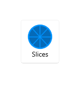
Create a repeat button
- Important APIs: RepeatButton class, Click event, Content property
The WinUI 3 Gallery app includes interactive examples of most WinUI 3 controls, features, and functionality. Get the app from the Microsoft Store or get the source code on GitHub
A RepeatButton control is a button that raises Click events repeatedly from the time it's pressed until it's released. Set the Delay property to specify the time that the RepeatButton control waits after it is pressed before it starts repeating the click action. Set the Interval property to specify the time between repetitions of the click action. Times for both properties are specified in milliseconds.
The following example shows two RepeatButton controls whose respective Click events are used to increase and decrease the value shown in a text block.
<StackPanel>
<RepeatButton Width="100" Delay="500" Interval="100" Click="Increase_Click">Increase</RepeatButton>
<RepeatButton Width="100" Delay="500" Interval="100" Click="Decrease_Click">Decrease</RepeatButton>
<TextBlock x:Name="clickTextBlock" Text="Number of Clicks:" />
</StackPanel>
private static int _clicks = 0;
private void Increase_Click(object sender, RoutedEventArgs e)
{
_clicks += 1;
clickTextBlock.Text = "Number of Clicks: " + _clicks;
}
private void Decrease_Click(object sender, RoutedEventArgs e)
{
if(_clicks > 0)
{
_clicks -= 1;
clickTextBlock.Text = "Number of Clicks: " + _clicks;
}
}
Create a drop down button
- Important APIs: DropDownButton class, Flyout property
The WinUI 3 Gallery app includes interactive examples of most WinUI 3 controls, features, and functionality. Get the app from the Microsoft Store or get the source code on GitHub
A DropDownButton is a button that shows a chevron as a visual indicator that it has an attached flyout that contains more options. It has the same behavior as a standard Button control with a flyout; only the appearance is different.
The drop down button inherits the Click event, but you typically don't use it. Instead, you use the Flyout property to attach a flyout and invoke actions by using menu options in the flyout. The flyout opens automatically when the button is clicked. Be sure to specify the Placement property of your flyout to ensure the desired placement in relation to the button. The default placement algorithm might not produce the intended placement in all situations. For more info about flyouts, see Flyouts and Menu flyout and menu bar.
Example - Drop down button
This example shows how to create a drop down button with a flyout that contains commands for paragraph alignment in a RichEditBox control. (For more info and code, see Rich edit box).
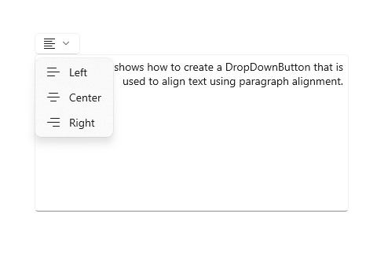
<DropDownButton ToolTipService.ToolTip="Alignment">
<TextBlock FontFamily="Segoe MDL2 Assets" FontSize="14" Text=""/>
<DropDownButton.Flyout>
<MenuFlyout Placement="BottomEdgeAlignedLeft">
<MenuFlyoutItem Text="Left" Icon="AlignLeft" Tag="left"
Click="AlignmentMenuFlyoutItem_Click"/>
<MenuFlyoutItem Text="Center" Icon="AlignCenter" Tag="center"
Click="AlignmentMenuFlyoutItem_Click"/>
<MenuFlyoutItem Text="Right" Icon="AlignRight" Tag="right"
Click="AlignmentMenuFlyoutItem_Click"/>
</MenuFlyout>
</DropDownButton.Flyout>
</DropDownButton>
private void AlignmentMenuFlyoutItem_Click(object sender, RoutedEventArgs e)
{
var option = ((MenuFlyoutItem)sender).Tag.ToString();
Windows.UI.Text.ITextSelection selectedText = editor.Document.Selection;
if (selectedText != null)
{
// Apply the alignment to the selected paragraphs.
var paragraphFormatting = selectedText.ParagraphFormat;
if (option == "left")
{
paragraphFormatting.Alignment = Windows.UI.Text.ParagraphAlignment.Left;
}
else if (option == "center")
{
paragraphFormatting.Alignment = Windows.UI.Text.ParagraphAlignment.Center;
}
else if (option == "right")
{
paragraphFormatting.Alignment = Windows.UI.Text.ParagraphAlignment.Right;
}
}
}
Create a split button
- Important APIs: SplitButton class, Click event, Flyout property
The WinUI 3 Gallery app includes interactive examples of most WinUI 3 controls, features, and functionality. Get the app from the Microsoft Store or get the source code on GitHub
A SplitButton control has two parts that can be invoked separately. One part behaves like a standard button and invokes an immediate action. The other part invokes a flyout that contains additional options that the user can choose from.
Note
When invoked with touch, the split button behaves as a drop down button; both halves of the button invoke the flyout. With other methods of input, a user can invoke either half of the button separately.
The typical behavior for a split button is:
When the user clicks the button part, handle the Click event to invoke the option that's currently selected in the drop down.
When the drop down is open, handle invocation of the items in the drop down to both change which option is selected, and then invoke it. It's important to invoke the flyout item because the button Click event doesn't occur when using touch.
Tip
There are many ways to put items in the drop down and handle their invocation. If you use a ListView or GridView, one way is to handle the SelectionChanged event. If you do this, set SingleSelectionFollowsFocus to false. This lets users navigate the options using a keyboard without invoking the item on each change.
Example - Split button
This example shows how to create a split button that is used to change the foreground color of selected text in a RichEditBox control. (For more info and code, see Rich edit box). Split button's flyout uses BottomEdgeAlignedLeft as the default value for its Placement property. You can't override this value.
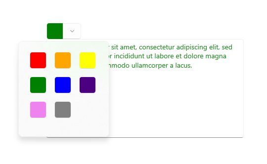
<SplitButton ToolTipService.ToolTip="Foreground color"
Click="BrushButtonClick">
<Border x:Name="SelectedColorBorder" Width="20" Height="20"/>
<SplitButton.Flyout>
<Flyout x:Name="BrushFlyout">
<!-- Set SingleSelectionFollowsFocus="False"
so that keyboard navigation works correctly. -->
<GridView ItemsSource="{x:Bind ColorOptions}"
SelectionChanged="BrushSelectionChanged"
SingleSelectionFollowsFocus="False"
SelectedIndex="0" Padding="0">
<GridView.ItemTemplate>
<DataTemplate>
<Rectangle Fill="{Binding}" Width="20" Height="20"/>
</DataTemplate>
</GridView.ItemTemplate>
<GridView.ItemContainerStyle>
<Style TargetType="GridViewItem">
<Setter Property="Margin" Value="2"/>
<Setter Property="MinWidth" Value="0"/>
<Setter Property="MinHeight" Value="0"/>
</Style>
</GridView.ItemContainerStyle>
</GridView>
</Flyout>
</SplitButton.Flyout>
</SplitButton>
public sealed partial class MainPage : Page
{
// Color options that are bound to the grid in the split button flyout.
private List<SolidColorBrush> ColorOptions = new List<SolidColorBrush>();
private SolidColorBrush CurrentColorBrush = null;
public MainPage()
{
this.InitializeComponent();
// Add color brushes to the collection.
ColorOptions.Add(new SolidColorBrush(Colors.Black));
ColorOptions.Add(new SolidColorBrush(Colors.Red));
ColorOptions.Add(new SolidColorBrush(Colors.Orange));
ColorOptions.Add(new SolidColorBrush(Colors.Yellow));
ColorOptions.Add(new SolidColorBrush(Colors.Green));
ColorOptions.Add(new SolidColorBrush(Colors.Blue));
ColorOptions.Add(new SolidColorBrush(Colors.Indigo));
ColorOptions.Add(new SolidColorBrush(Colors.Violet));
ColorOptions.Add(new SolidColorBrush(Colors.White));
}
private void BrushButtonClick(object sender, object e)
{
// When the button part of the split button is clicked,
// apply the selected color.
ChangeColor();
}
private void BrushSelectionChanged(object sender, SelectionChangedEventArgs e)
{
// When the flyout part of the split button is opened and the user selects
// an option, set their choice as the current color, apply it, then close the flyout.
CurrentColorBrush = (SolidColorBrush)e.AddedItems[0];
SelectedColorBorder.Background = CurrentColorBrush;
ChangeColor();
BrushFlyout.Hide();
}
private void ChangeColor()
{
// Apply the color to the selected text in a RichEditBox.
Windows.UI.Text.ITextSelection selectedText = editor.Document.Selection;
if (selectedText != null)
{
Windows.UI.Text.ITextCharacterFormat charFormatting = selectedText.CharacterFormat;
charFormatting.ForegroundColor = CurrentColorBrush.Color;
selectedText.CharacterFormat = charFormatting;
}
}
}
Create a toggle split button
- Important APIs: ToggleSplitButton class, IsCheckedChanged event, IsChecked property
The WinUI 3 Gallery app includes interactive examples of most WinUI 3 controls, features, and functionality. Get the app from the Microsoft Store or get the source code on GitHub
A ToggleSplitButton control has two parts that can be invoked separately. One part behaves like a toggle button that can be on or off. The other part invokes a flyout that contains additional options that the user can choose from.
A toggle split button is typically used to enable or disable a feature when the feature has multiple options that the user can choose from. For example, in a document editor, it could be used to turn lists on or off, while the drop down is used to choose the style of the list.
Note
When invoked with touch, the toggle split button behaves as a drop down button. With other methods of input, a user can toggle and invoke the two halves of the button separately. With touch, both halves of the button invoke the flyout. Therefore, you must include an option in your flyout content to toggle the button on or off.
Differences with ToggleButton
Unlike ToggleButton, ToggleSplitButton does not have an indeterminate state. As a result, you should keep in mind these differences:
- ToggleSplitButton does not have an IsThreeState property or Indeterminate event.
- The ToggleSplitButton.IsChecked property is just a Boolean, not a Nullable<bool>.
- ToggleSplitButton has only the IsCheckedChanged event; it does not have separate Checked and Unchecked events.
Example - Toggle split button
The following example shows how a toggle split button could be used to turn list formatting on or off, and change the style of the list, in a RichEditBox control. (For more info and code, see Rich edit box). The flyout of the toggle split button uses BottomEdgeAlignedLeft as the default value for its Placement property. You can't override this value.
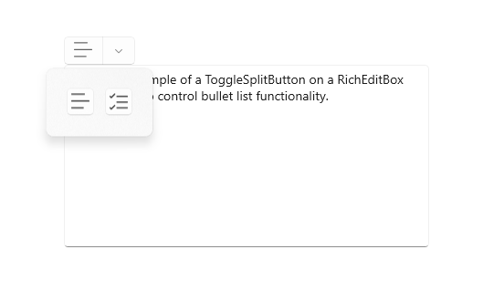
<ToggleSplitButton x:Name="ListButton"
ToolTipService.ToolTip="List style"
Click="ListButton_Click"
IsCheckedChanged="ListStyleButton_IsCheckedChanged">
<TextBlock FontFamily="Segoe MDL2 Assets" FontSize="14" Text=""/>
<ToggleSplitButton.Flyout>
<Flyout>
<ListView x:Name="ListStylesListView"
SelectionChanged="ListStylesListView_SelectionChanged"
SingleSelectionFollowsFocus="False">
<StackPanel Tag="bullet" Orientation="Horizontal">
<FontIcon FontFamily="Segoe MDL2 Assets" Glyph=""/>
<TextBlock Text="Bullet" Margin="8,0"/>
</StackPanel>
<StackPanel Tag="alpha" Orientation="Horizontal">
<TextBlock Text="A" FontSize="24" Margin="2,0"/>
<TextBlock Text="Alpha" Margin="8"/>
</StackPanel>
<StackPanel Tag="numeric" Orientation="Horizontal">
<FontIcon FontFamily="Segoe MDL2 Assets" Glyph=""/>
<TextBlock Text="Numeric" Margin="8,0"/>
</StackPanel>
<TextBlock Tag="none" Text="None" Margin="28,0"/>
</ListView>
</Flyout>
</ToggleSplitButton.Flyout>
</ToggleSplitButton>
private void ListStyleButton_IsCheckedChanged(ToggleSplitButton sender, ToggleSplitButtonIsCheckedChangedEventArgs args)
{
// Use the toggle button to turn the selected list style on or off.
if (((ToggleSplitButton)sender).IsChecked == true)
{
// On. Apply the list style selected in the drop down to the selected text.
var listStyle = ((FrameworkElement)(ListStylesListView.SelectedItem)).Tag.ToString();
ApplyListStyle(listStyle);
}
else
{
// Off. Make the selected text not a list,
// but don't change the list style selected in the drop down.
ApplyListStyle("none");
}
}
private void ListStylesListView_SelectionChanged(object sender, SelectionChangedEventArgs e)
{
var listStyle = ((FrameworkElement)(e.AddedItems[0])).Tag.ToString();
if (ListButton.IsChecked == true)
{
// Toggle button is on. Turn it off...
if (listStyle == "none")
{
ListButton.IsChecked = false;
}
else
{
// or apply the new selection.
ApplyListStyle(listStyle);
}
}
else
{
// Toggle button is off. Turn it on, which will apply the selection
// in the IsCheckedChanged event handler.
ListButton.IsChecked = true;
}
}
private void ApplyListStyle(string listStyle)
{
Windows.UI.Text.ITextSelection selectedText = editor.Document.Selection;
if (selectedText != null)
{
// Apply the list style to the selected text.
var paragraphFormatting = selectedText.ParagraphFormat;
if (listStyle == "none")
{
paragraphFormatting.ListType = Windows.UI.Text.MarkerType.None;
}
else if (listStyle == "bullet")
{
paragraphFormatting.ListType = Windows.UI.Text.MarkerType.Bullet;
}
else if (listStyle == "numeric")
{
paragraphFormatting.ListType = Windows.UI.Text.MarkerType.Arabic;
}
else if (listStyle == "alpha")
{
paragraphFormatting.ListType = Windows.UI.Text.MarkerType.UppercaseEnglishLetter;
}
selectedText.ParagraphFormat = paragraphFormatting;
}
}
UWP and WinUI 2
Important
The information and examples in this article are optimized for apps that use the Windows App SDK and WinUI 3, but are generally applicable to UWP apps that use WinUI 2. See the UWP API reference for platform specific information and examples.
This section contains information you need to use the control in a UWP or WinUI 2 app.
The DropDownButton, SplitButton, and ToggleSplitButton controls for UWP apps are included as part of WinUI 2. For more info, including installation instructions, see WinUI 2. APIs for these controls exist in both the Windows.UI.Xaml.Controls and Microsoft.UI.Xaml.Controls namespaces.
- UWP APIs: Button class, RepeatButton class, HyperlinkButton class, DropDownButton, SplitButton, ToggleSplitButton, ToggleButton, Click event, Command property, Content property
- WinUI 2 Apis: DropDownButton, SplitButton, ToggleSplitButton
- Open the WinUI 2 Gallery app and see the Button in action. The WinUI 2 Gallery app includes interactive examples of most WinUI 2 controls, features, and functionality. Get the app from the Microsoft Store or get the source code on GitHub.
We recommend using the latest WinUI 2 to get the most current styles and templates for all controls. WinUI 2.2 or later includes a new template for these controls that uses rounded corners. For more info, see Corner radius.
To use the code in this article with WinUI 2, use an alias in XAML (we use muxc) to represent the Windows UI Library APIs that are included in your project. See Get Started with WinUI 2 for more info.
xmlns:muxc="using:Microsoft.UI.Xaml.Controls"
<muxc:DropDownButton />
<muxc:SplitButton />
<muxc:ToggleSplitButton />